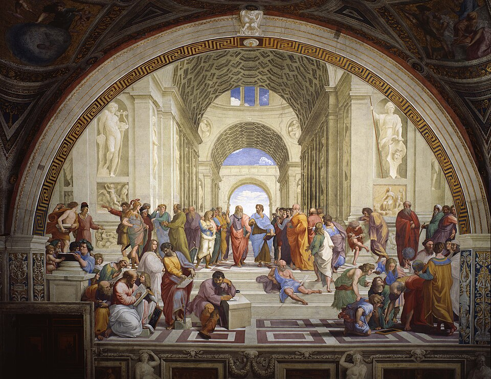
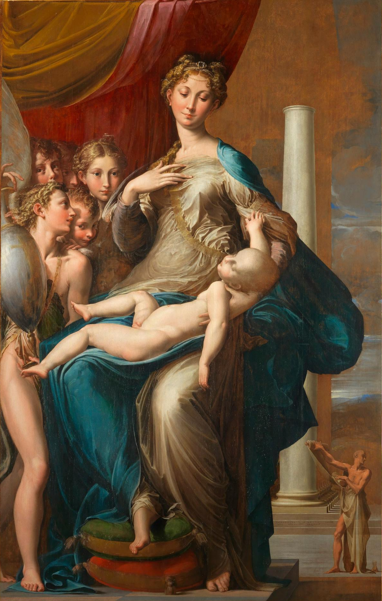
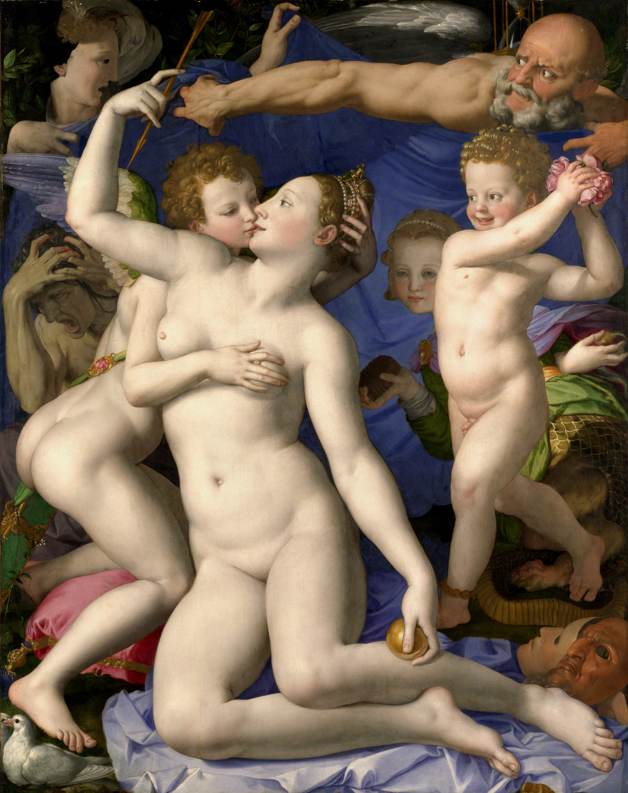
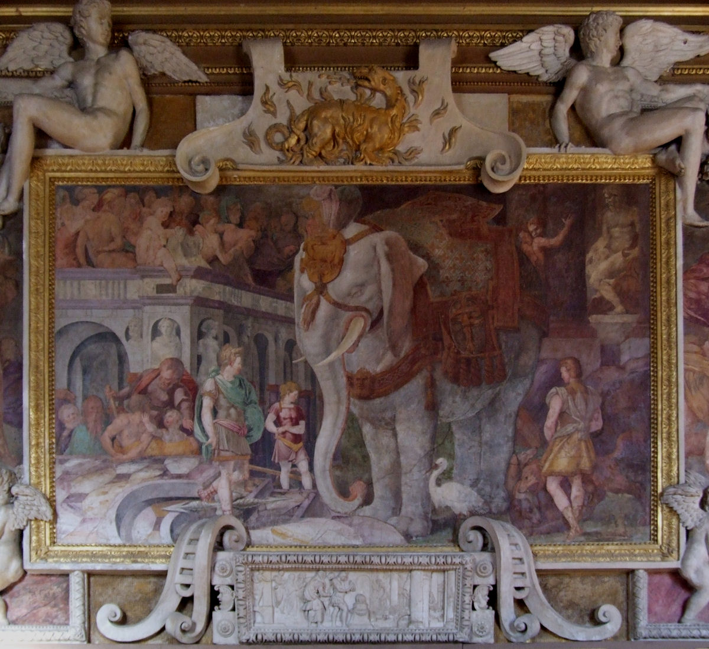
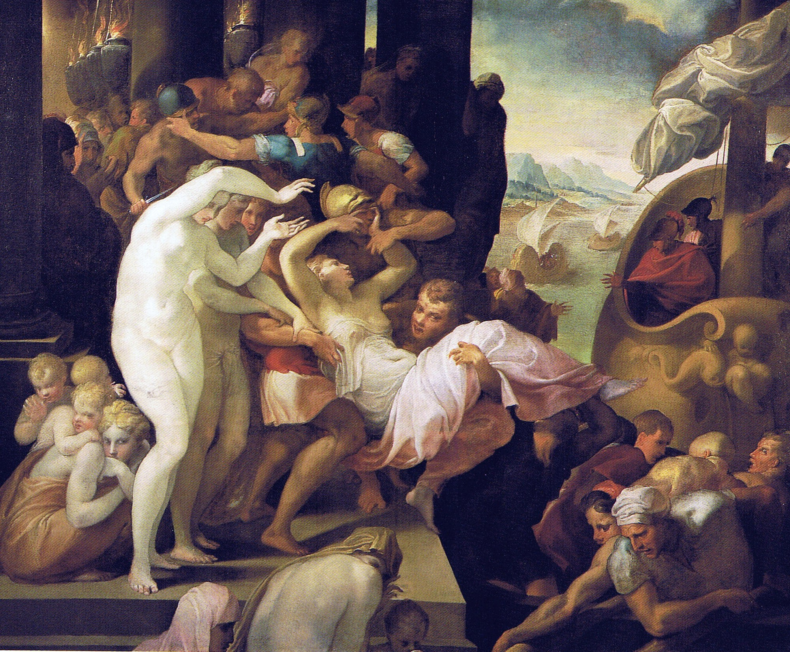

전성기 르네상스
상세 학습
매너리즘은 전성기 르네상스의 균형을 충분히 익힌 화가들이 비례, 자세, 공간, 색을 의도적으로 인공화한 16세기의 실험이다. 안정된 규칙을 지키지 못한 쇠퇴가 아니라 완성된 규칙 이후 무엇을 할 수 있는지 묻는 세련된 양식이다.
르네상스의 명료한 중심과 안정된 비례를 흔들며, 뒤의 바로크처럼 관람자를 현실 공간으로 끌어들이기보다 화면 자체의 난해함과 인공성을 강조한다.
흔한 오해: 왜곡을 해부학적 미숙함으로 판단하면 핵심을 놓친다. 많은 왜곡은 숙련을 과시하고 익숙한 종교·신화 장면을 낯설게 만들기 위한 의도적 선택이다.
매너리즘의 문제의식은 르네상스가 아직 부족했기 때문이 아니라, 오히려 균형, 조화, 원근법, 이상적 인체가 너무 설득력 있게 완성된 뒤 시작되었다. 폰토르모, 로소, 파르미자니노, 브론치노 같은 화가들은 더 정확한 자연 재현을 목표로 삼기보다, 이미 완성된 문법을 일부러 비틀어 불안, 인공성, 우아한 과장, 지적인 난해함을 새로운 미적 가치로 만들었다.
중세에서 르네상스로의 변화는 오랜 시간에 걸쳐 축적된 문제의식이었다. 그러나 매너리즘은 달랐다. 전성기 르네상스가 너무 빠르게 완성된 정답처럼 보이는 회화 문법을 만들었고, 그 직후 예술가들은 “더 자연스럽게, 더 균형 있게”라는 방향만으로는 새로움을 만들기 어렵다고 느꼈다. 다시 말해 매너리즘의 출발점은 르네상스의 실패가 아니라 르네상스의 지나친 성공 이후 생긴 막다른 길이었다.
다 빈치, 라파엘로, 미켈란젤로 세대가 인체, 원근법, 균형, 명암, 고전적 이상미를 거의 모범 답안처럼 제시했다. 뒤 세대 화가에게 단순한 반복은 새로움이 되기 어려웠다.
라파엘로의 죽음은 전성기 르네상스의 한 시대가 끝났다는 상징처럼 받아들여졌다. 이후 화가들은 완성된 조화의 언어를 계승할지, 일부러 흔들어 새로운 길을 만들지 선택해야 했다.
1517년 종교개혁과 1527년 로마 약탈은 로마와 교회의 안정된 권위에 큰 충격을 주었다. 이상적 질서와 조화의 세계관은 현실의 불안과 정치적 폭력을 그대로 설명하기 어려워졌다.
16세기 중반의 궁정 후원은 누구나 즉시 이해하는 자연스러움보다, 어렵고 세련되며 인공적인 이미지에 매력을 느꼈다. 그래서 매너리즘은 일부러 복잡하고 우아하며 해석을 요구하는 양식으로 발전했다.
라파엘로식 안정과 미켈란젤로식 영웅성이 이미 정점에 이른 뒤, 같은 공식을 반복하는 일이 새로움으로 느껴지지 않았다.
목, 손가락, 팔다리를 길게 늘여 자연스러움보다 긴장과 세련미를 앞세웠다.
논리적으로 정리된 공간 대신, 압축되고 모호하며 어디에 서 있는지 헷갈리는 장면을 만들었다.
분홍, 청록, 보라 같은 비현실적 색과 멈칫한 자세로 불안하고 예민한 분위기를 만들었다.
신화, 알레고리, 암시를 복잡하게 엮어 관람자가 즉시 이해하기보다 읽어내야 하는 회화를 만들었다.

| 관찰 항목 | 전성기 르네상스 | 매너리즘 |
|---|---|---|
| 인체 | 이상적이지만 자연스러운 비례 | 길어지고 가늘어지거나 비틀린 비례 |
| 자세 | 안정적이며 의미가 명확함 | 복잡한 회전, 인공적인 몸짓 |
| 공간 | 원근법적으로 명료함 | 압축되거나 모호하고 비논리적 |
| 구도 | 대칭·균형·중심성 | 불균형·과밀·예측하기 어려운 배열 |
| 색채 | 자연스럽고 조화로움 | 차갑고 비현실적인 색 대비 |
| 감정 | 절제되고 고전적 | 긴장되고 심리적으로 불안정 |
| 화가의 목표 | 자연과 이상을 조화롭게 재현 | 화가의 솜씨와 독창적 방식 자체를 과시 |
바로크처럼 명확한 두 학파로 분리되었다고 말하기는 어렵지만, 작품을 이해하기 위해서는 다음 네 경향을 구분하면 유용하다.
파르미자니노처럼 신체를 길고 가늘게 변형하여 세련되고 비현실적인 아름다움을 추구한다.
북부 매너리즘은 별도 사조라기보다 매너리즘이 하를럼, 위트레흐트, 플랑드르, 루돌프 2세의 프라하 궁정으로 옮겨가며 더 장식적이고 지적인 신화화로 변한 흐름이다. 네덜란드 매너리즘도 이 범주 안의 지역 흐름으로 보며, 슈프랑거처럼 꼬인 누드, 에로틱한 신화, 알레고리, 수집 문화가 함께 나타난다.


| 비교 항목 | 전성기 르네상스 | 매너리즘 | 초기 바로크 |
|---|---|---|---|
| 대표적 목표 | 조화롭고 완전한 세계 | 세련되고 독창적인 변형 | 현실적이고 강렬한 체험 |
| 인체 | 이상적·자연적 | 길고 비틀리며 과장됨 | 현실적이며 행동성이 강함 |
| 공간 | 명료한 원근법 | 압축·모호·비논리적 | 극적이고 관람자에게 열림 |
| 구도 | 균형·대칭·중심성 | 불균형·복잡성 | 대각선·운동·긴장 |
| 색과 빛 | 조화롭고 자연스러움 | 인공적이고 차가운 색 | 강한 명암과 극적 조명 |
| 관람자 경험 | 이상적 세계를 감상 | 세련된 방식과 난해함을 해석 | 사건의 목격자가 됨 |
매너리즘의 공통점은 전성기 르네상스의 자연스러운 조화보다 세련된 인공성, 복잡한 자세, 의도적 왜곡과 지적인 암시를 선호했다는 데 있다.
| 국가·지역·세부 사조 | 지역적 특징 | 대표 화가·제작자 | 더 볼 화가 |
|---|---|---|---|
| 이탈리아 — 이탈리아 매너리즘 |
| 야코포 다 폰토르모 | 파르미자니노, 브론치노 |
| 프랑스 — 퐁텐블로파 |
| 로소 피오렌티노 | 프란체스코 프리마티초 |
이탈리아 궁정에서는 르네상스의 안정된 균형을 일부러 늘이고 비틀어 세련된 긴장을 만들었고, 프랑스와 중부유럽 궁정에서는 이를 장식·의례의 언어로 받아들였다. 자연스러운 비례보다 길어진 몸, 낯선 색, 복잡한 공간을 살펴보자.
매너리즘은 르네상스가 실패해서 생긴 양식이 아니라, 르네상스의 완성도가 너무 높아진 뒤 예술가들이 일부러 균형을 비틀며 새 표현의 출구를 찾은 흐름이다. 안정된 삼각 구도, 명확한 원근법, 자연스러운 인체 비례를 그대로 반복하기보다, 늘어진 몸, 불안정한 공간, 차갑고 산성적인 색, 어렵고 지적인 알레고리를 통해 "완벽함 다음의 긴장"을 보여준다.
아래 카드는 국가별 전개 표에 나온 대표 화가를 활동 시기 순으로 다시 모은 것이다. 앞부분에서 이미 소개한 화가도 빠뜨리지 않고 함께 제시한다.

선정 이유: 폰토르모는 전성기 르네상스의 안정이 어떻게 의도적인 긴장과 비현실성으로 바뀌는지 가장 선명하게 보여 준다.
인물들은 땅의 무게를 잃은 듯 겹치고 분홍·청색의 차가운 색채가 슬픔을 낯선 감각으로 만든다. 중심축과 깊이가 불안정해진 화면은 매너리즘이 미숙한 르네상스가 아니라 의식적인 변형임을 알려 준다.

더 볼 이유: 파르미자니노는 매너리즘의 의도적인 신체 변형을 가장 알아보기 쉽게 보여 준다.
길어진 목과 손가락, 불안정한 공간은 르네상스의 자연스러운 비례를 세련되게 비튼 매너리즘의 특징이다. 우아함을 현실성보다 앞세워 차갑고 귀족적인 아름다움을 만든 것이 파르미자니노만의 특성이다.

더 볼 이유: 브론치노는 매너리즘의 세련된 인공성과 복잡한 우의를 피렌체 궁정 회화의 언어로 완성했다.
차갑고 매끈한 피부, 비현실적인 신체 얽힘, 해독하기 어려운 상징은 자연스러운 르네상스 질서에서 벗어난 매너리즘을 보여 준다. 감정을 억제한 보석 같은 표면은 브론치노만의 특성이다.

선정 이유: 로소는 이탈리아의 인체 변형을 프랑수아 1세 궁정의 장식 프로그램으로 옮긴 퐁텐블로파의 핵심 전달자다.
회화와 조각 같은 스투코 장식이 하나의 벽면에서 이어지며 궁정의 권력과 교양을 알레고리로 만든다. 작품 하나보다 방 전체를 통합하는 장식 개념이 퐁텐블로파의 차이를 설명한다.

더 볼 이유: 프리마티초는 퐁텐블로파의 궁정 장식 체계를 로소 이후 지속한 핵심 화가다.
늘씬한 인체와 복잡한 신화 장면은 프랑스 궁정에서 전개된 매너리즘의 특징을 보여 준다. 회화·스투코·실내 장식을 하나의 프로그램으로 통합한 점은 프리마티초만의 강점이다.